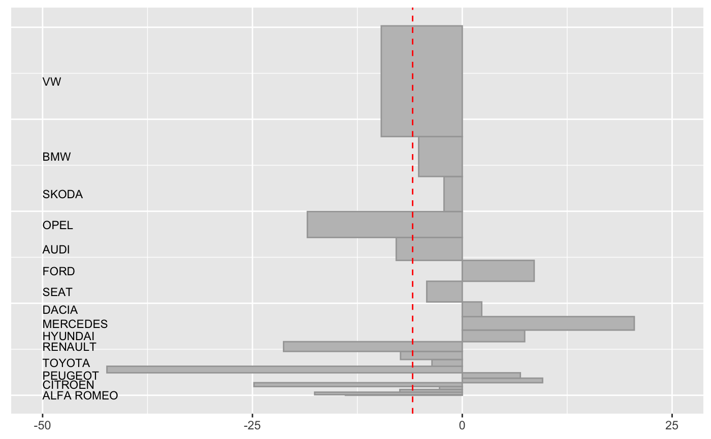

AutoSalesX.RdSales of cars and vans in Germany for 2017 and 2018. The market is divided into 14 segments and in the two years 2017 and 2018 there were 50 competing manufacturers.
data(AutoSalesX)
A data frame with 173 observations on the following 5 variables.
SectorCar, Van, Other
SegmentMarket segment
ManufacturerManufacturer
sales17Sales in 2017
sales18Sales in 2018
This is a 'cleaned' and reduced version of the dataset AutoSales from this package.
Vehicles selling less than 1000 in both years have been reclassified as 'Other'. The data have been aggregated by manufacturer within segments.
Kraftfahrt-Bundesamt
https://www.kba.de/DE/Statistik/Fahrzeuge/Neuzulassungen/MonatlicheNeuzulassungen/monatl_neuzulassungen_node.html
library(dplyr)#> #>#> #> #>#> #> #>yx <- ud_prep(AutoSalesX %>% filter(Segment=="Compact"), v1="sales17", v2="sales18", levs=c("Manufacturer"), sortLev=c("base")) y5 <- ud_plot(yx, labelvar="Manufacturer") y5$uadl